- Find the new position of each point using the translation given.
- \(2 \to\) , ↓ (ii) 6 ↑ (iii) 3 ←, 5 ↓ (iv) 4 \(\to\) , 3 ↑
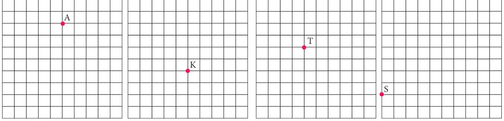
- How is the pre-image translated to the image?
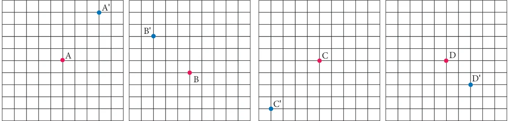
- Find the image of the given triangle with given translation.
↑ \(6 \to 3\) ↓ (iii) 5 ← 4 ↓ \(4 \to 3\) ↑
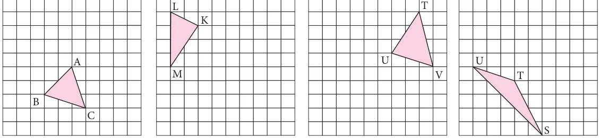
- Reflect the shape with given line of reflection.
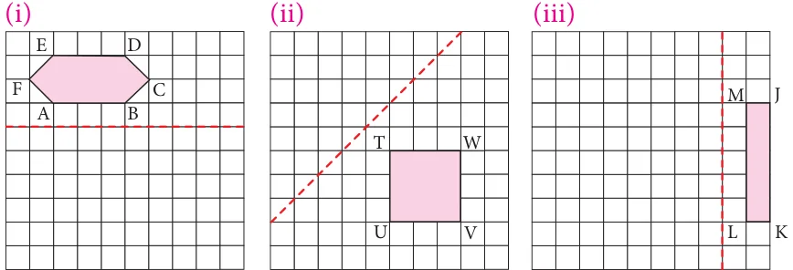
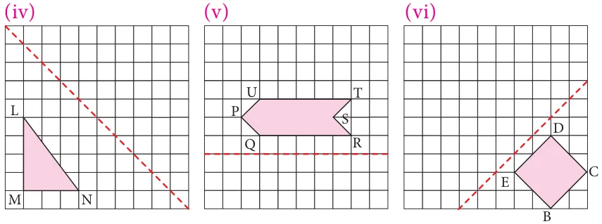
- Reflect the shape in each of the following pictures with given line of reflection.
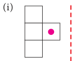
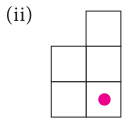
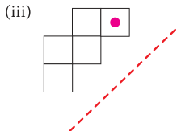
- Rotate the preimages in each case as directed about the green point.
- 90˚ clockwise 180˚ (iii) 270˚counter clockwise
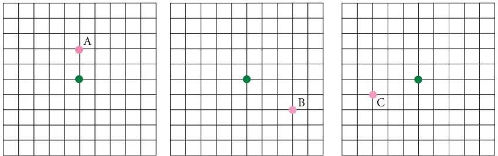
- 90˚counter clockwise (v) 90˚ clockwise 180˚
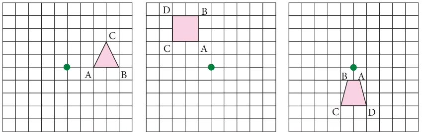
Identify the transformation
- 8.
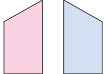
- A pool of fish translates from point F to point D.
- Describe the translation of the pool of fish.
- Can the fishing boat make the same
translation? Explain.
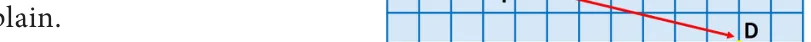
- Describe a translation the fishing boat could make to get to point D.
- Name the transformation that will map footprint A onto the indicated footprint.
- Footprint B
- Footprint D (iv) Footprint E
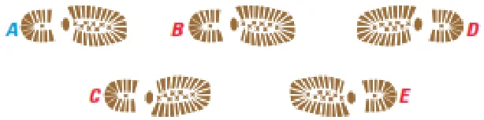
- In given diagram, the blue figure is an image of the pink figure.
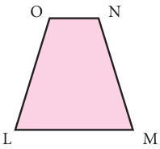
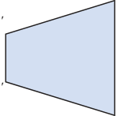
N΄
O΄
- Choose an angle or a vertex from the preimage and name its image.
- List all pairs of corresponding sides.
- In the diagram at the right, the green figure is a translation image of the pink figure.
Write a coordinate rule that describes the translation.
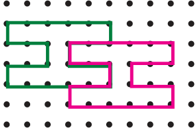
Objective type questions.
- A _____ is a turn about a point.
- Translation (ii) Rotation (iii) Reflection (iv) Glide Reflection
- A _____ is a flip over a line.
- Translation (ii) Rotation (iii) Reflection (iv) Glide Reflection
- A _____ is a slide; move without turning or flipping the shape.
- Translation (ii) Rotation (iii) Reflection (iv) Glide Reflection
- The transformation used in the picture is
- Translation (ii) Rotation
- Reflection (iv) Glide Reflection
- The transformation used in the picture is
- Translation (ii) Rotation
- Reflection (iv) Glide Reflection
- You must rotate the puzzle piece \(270 ^{\circ}\) clockwise about the point P to fit it into a puzzle. Which piece fits in the puzzle as shown?
- (ii) (iii) (iv)